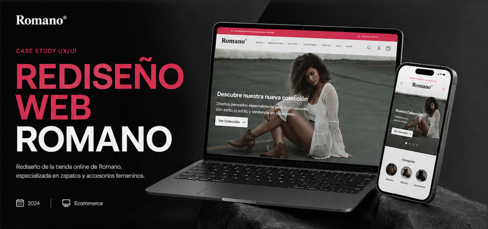
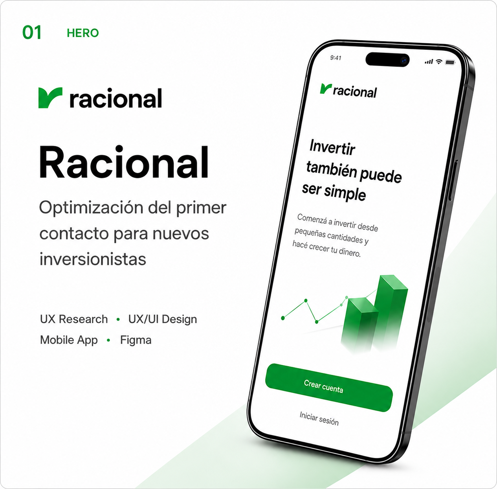
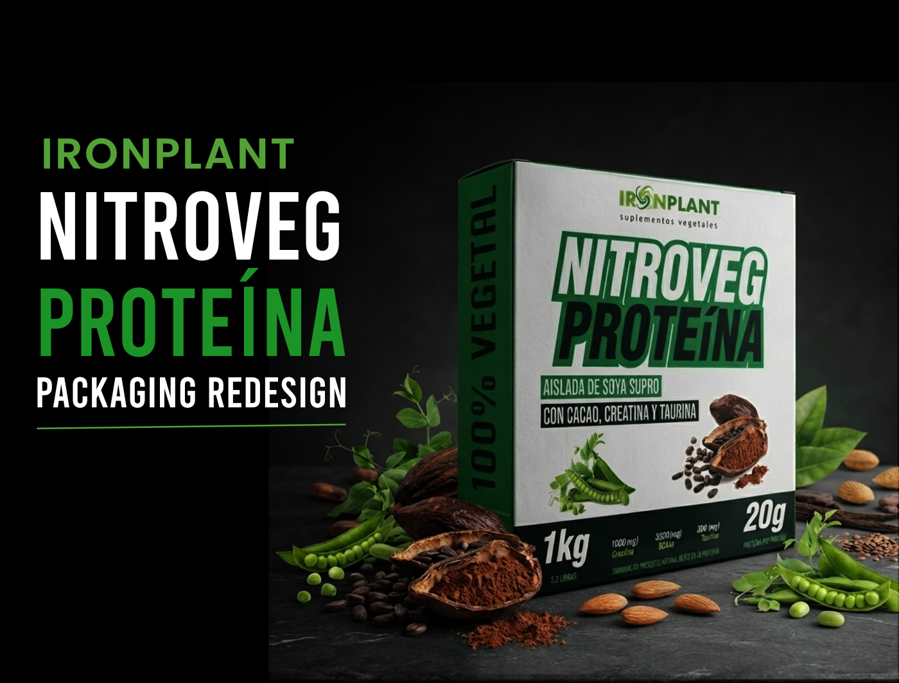
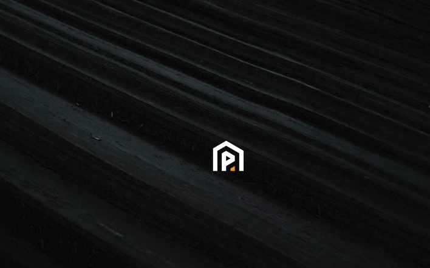
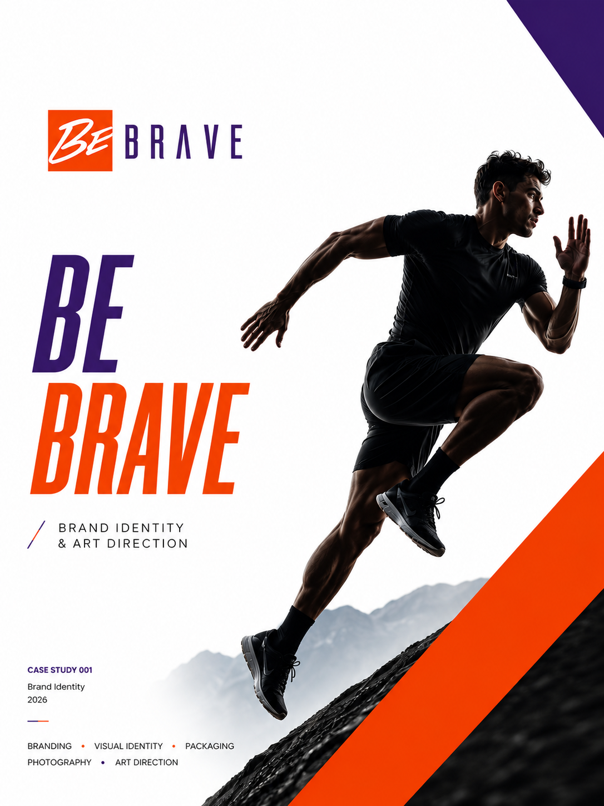
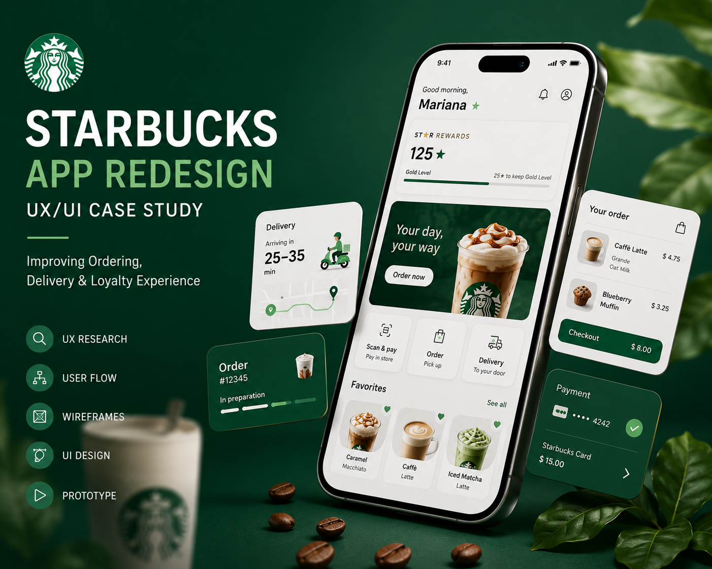

Romano.cl
Rediseño UX/UI completo: arquitectura de información, wireframes, prototipo final y UI kit.
Ver proyecto
Racional
Rediseño del flujo de onboarding para una fintech, enfocado en reducir la fricción de registro.
Ver proyecto
Nitroveg
NitroVeg es un proyecto de branding desarrollado para una proteína vegetal.
Ver proyecto
Prorevest
sManual de marca e identidad visual para empresa de paneles murales.
Ver proyecto
BeBrave
Desarrollo de marca y piezas de comunicación para lanzamiento.
Ver proyecto
Starbuck
Landing page y auditoría UX/UI con puntaje 74/100.
Ver proyecto